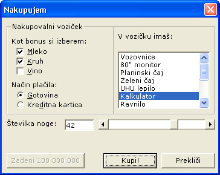
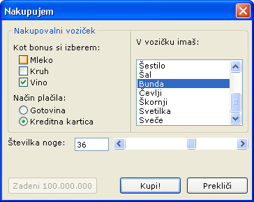
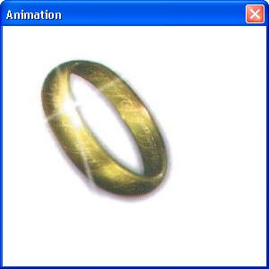
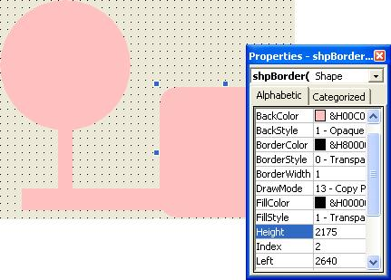
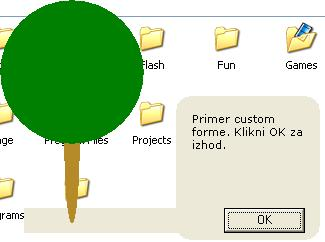
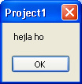

| VB Triki
Avtor: Trayrd
Objavljeno: 15.05.2003, ob 15:25:33.
Visual Basica nekateri ne smatrajo kot programskega jezika - če sem pošten, ga zadnje čase še jaz ne več (posledica spoznavanja ostalih jezikov) - a recite karkoli, v njem se še vedno da spisati kvaliteten program, le nekaj izkušenj moraš imeti, vrh vsega pa je še RAD (rapid application development), se pravi da z njim lahko narediš aplikacijo dokaj hitro. Ponavadi je tako, da te v VB presenetijo čisto nenavadni problemi, potem pa obupaš, ker nanje ne najdeš odgovora. No, v tem članku bom poskusil odgovarjati na najpogosteje postavljena vprašanja kar se tiče VB5 in VB6, s tem, da pričakujem, da imate tudi sami nekaj predznanja (torej ne bom opisoval, kako nalepiti na formo gumb in podobnih reči). Ker vem, da vas tole besedičenje bolj malo interesira, lahko začnemo.
(1) Kako naj v VB6 naredim program, ki bo podpiral XP teme?
Ah, kolikokrat sem že to slišal. Večinoma šaltajo vsi na VB.net prav zaradi tega, a obstaja čisto enostavna metoda, kako podpreti XP teme v VB6. Pa si poglejmo. Začnimo nov projekt in na formo nalepimo nekaj kontrol, denimo:

Kot vidimo, je v stilu XP samo naslovna vrstica in kontrola ListBox. In rešitev? Najprej odprite novo modulo (Project -> Add module), nato skopirajte vanjo naslednjo kodo:
Option Explicit
Public Type tagInitCommonControlsEx
lngSize As Long
lngICC As Long
End Type
Public Declare Function InitCommonControlsEx Lib "comctl32.dll" (iccex As tagInitCommonControlsEx) As Boolean
Public Const ICC_USEREX_CLASSES = &H200
Public Sub Main()
On Error Resume Next
Dim iccex As tagInitCommonControlsEx
With iccex
.lngSize = LenB(iccex)
.lngICC = ICC_USEREX_CLASSES
End With
InitCommonControlsEx iccex
On Error GoTo 0
Form1.Show
End Sub
V tem primeru je naši formi ime seveda Form1. Ko s tem opravimo, v Project Properties (Project -> Project Properties) nastavimo, naj se program zažene iz Sub Main () (Startup Object). Potem sledi še del z xml kodiranjem; odprimo Notepad, kopirajmo vanj spodnjo kodo, in ga shranimo v obliki .exe.manifest (za vzemite ime exe datoteke, ki jo boste kasneje kompilirali, recimo igra.exe.manifest).
<?xml version="1.0" encoding="UTF-8" standalone="yes"?>
<assembly xmlns="urn:schemas-microsoft-com:asm.v1" manifestVersion="1.0">
<assemblyIdentity
version="1.0.0.0"
processorArchitecture="X86"
name="<exename>"
type="win32"
/>
VB code converter.</description>
<dependency>
<dependentAssembly>
<assemblyIdentity
type="win32"
name="Microsoft.Windows.Common-Controls"
version="6.0.0.0"
processorArchitecture="X86"
publicKeyToken="6595b64144ccf1df"
language="*"
/>
</dependentAssembly>
</dependency>
</assembly>
V kodi prav tako preimenujemo sekcijo name="" v ime exe datoteke. To je to. Aplikacijo kompilirajte, ji dajte ime, ki ste ji ga izbrali, in jo zaženite. Voila:

Opomba: manifest lahko dodate kateremukoli Windows-based programu, da mu spremenite "stari" videz v "xp". Če vas recimo moti "Windows 98 style" podoba Visual Basica, kopirajte manifest v direktorij z VB6.exe in mu spremenite ime v VB6.exe.manifest. Its that simple. Koda v moduli pa je tu samo za preprečevanje nekaterih napak (a bo v 99 odstotkih delovala tudi brez nje).
(2) Kako preprečimo nadležno utripanje?
To je problem, zaradi katerega mladi programerji ponavadi obupajo in grejo igrat UT. Don't! Najprej malo teorije. Slike v VB utripajo zato, ker se v buffer (medpomnilnik) slika zapiše ob istem momentu, kot ko jo prikažemo na zaslonu. Ker procesor obenem ne more pisati v pomnilnik in na zaslon, pride do časovnega zamika in posledično utripanja. To se ponavadi dogaja, ko premikamo standardno Windows kontrolo (denimo Image) po formi, a brez slik igre pač delati ne moremo. Kako to popraviti? Ah, preprosto. Z uporabo Paint metod! Če na formo rišemo s Paint metodami, se slika najprej naloži v buffer, in šele nato pokaže na zaslonu, časovnega zamika ni, animacija teče gladko. In kaj Paint metode sploh so? Funkcije, s katerimi rišemo na forme geometrijske oblike in slike, npr.:
Line (5,6)-(100,11),vbRed,BF
PaintPicture LoadPicture(App.Path & "\Image\Img1.jpg"),800,15
Print "hello world"
Več o njih si preberite v Helpu, jaz pa vam bom pokazal preprost primer s sliko, ki se bo premikala levo in desno brez utripanja. Začnite nov projekt, na formo prilepite objekt Image, jo poimenujte imgPic, ji priredite neko sliko, in kopirajte to kodo v formo:
Option Explicit
Private Declare Sub Sleep Lib "kernel32" (ByVal dwMilliseconds As Long)
Private Sub Form_Load()
Me.Caption = "Animation"
Me.AutoRedraw = True 'Autoredraw mora biti vklopljen!
Me.BackColor = vbWhite
Me.Width = 300 * 15
Me.Height = 300 * 15
imgPic.Visible = False
Me.Show
StartShow
End Sub
Private Sub StartShow()
Dim picX As Integer, picY As Integer
Dim MoveLeft As Boolean
Do
DoEvents
Sleep 30
Cls
If MoveLeft Then
picX = picX + 15
picY = picY + 15
If picX > (Me.ScaleWidth - imgPic.Width - 15 * 5) Then MoveLeft = False
Else
picX = picX - 15
picY = picY - 15
If picX < (15 * 5) Then MoveLeft = True
End If
PaintPicture imgPic.Picture, picX, picY
Loop
End Sub
Private Sub Form_Unload(Cancel As Integer)
End
End Sub
Program bo premikal izbrano sliko levo in desno. Utripanja ni.

(3) Kako spremenimo resolucijo zaslona?
Tole sicer ni najpogosteje zastavljeno vprašanje, ker se v novejših časih resolucijo spreminja z DirectX-om, a obstaja tudi manj boleč način, in sicer s preprosto modulo:
Option Explicit
Private Declare Function EnumDisplaySettings Lib "user32" Alias "EnumDisplaySettingsA" (ByVal lpszDeviceName As Long, ByVal iModeNum As Long, lpDevMode As Any) As Boolean
Private Declare Function ChangeDisplaySettings Lib "user32" Alias "ChangeDisplaySettingsA" (lpDevMode As Any, ByVal dwflags As Long) As Long
Const CCDEVICENAME = 32
Const CCFORMNAME = 32
Const DM_PELSWIDTH = &H80000
Const DM_PELSHEIGHT = &H100000
Private Type DEVMODE
dmDeviceName As String * CCDEVICENAME
dmSpecVersion As Integer
dmDriverVersion As Integer
dmSize As Integer
dmDriverExtra As Integer
dmFields As Long
dmOrientation As Integer
dmPaperSize As Integer
dmPaperLength As Integer
dmPaperWidth As Integer
dmScale As Integer
dmCopies As Integer
dmDefaultSource As Integer
dmPrintQuality As Integer
dmColor As Integer
dmDuplex As Integer
dmYResolution As Integer
dmTTOption As Integer
dmCollate As Integer
dmFormName As String * CCFORMNAME
dmUnusedPadding As Integer
dmBitsPerPel As Integer
dmPelsWidth As Long
dmPelsHeight As Long
dmDisplayFlags As Long
dmDisplayFrequency As Long
End Type
Dim DevM As DEVMODE
Public Sub ChangeRes(iWidth As Single, iHeight As Single)
Dim a As Boolean
Dim I&
I = 0
Do
a = EnumDisplaySettings(0&, I&, DevM)
I = I + 1
Loop Until (a = False)
Dim b&
DevM.dmFields = DM_PELSWIDTH Or DM_PELSHEIGHT
DevM.dmPelsWidth = iWidth
DevM.dmPelsHeight = iHeight
b = ChangeDisplaySettings(DevM, 0)
End Sub
Po končanem delu je do uporabnika precej prijazno, če spremeni resolucijo nazaj v prejšnjo, in sicer takole:
Private PrevWidth As Single, PrevHeight As Single
Public Sub Main
PrevWidth = Screen.Width / Screen.TwipsPerPixelX
PrevHeight = Screen.Height / Screen.TwipsPerPixelY
ChangeRes 640, 480 'spremeni resolucijo na 640x480
' Program zaženemo
' Ko se konča:
ChangeRes PrevWidth, PrevHeight
End Sub
(4) Kako naredimo nestandardno formo?
Ali kako jo naredimo v obliki, kakršno hočemo sami. Hja, možnosti je veliko, a naj opišem najpreprostejšo. Odprite nov projekt in na formo zmečite kup kontrol Shape z imenom shpBorder in jih indeksirajte, lastnost Visible jim nastavite na False, formi sami pa nastavite vrednost BorderStyle na 0. V razvojnem okolju naj bi reč izgledala nekako takole:

Shape-om nastavite neko razpoznavno barvo, da jih sami lažje prepoznate (ob zagonu se jih ne bo videlo). No, nanje nato postavite nekaj kontrol za vzorec, in v formo kopirajte naslednjo kodo:
Option Explicit
'APIs
Private Declare Function CreatePolygonRgn Lib "gdi32" (lpPoint As POINTAPI, ByVal nCount As Long, ByVal nPolyFillMode As Long) As Long
Private Declare Function CreateRectRgn Lib "gdi32" (ByVal x1 As Long, ByVal y1 As Long, ByVal X2 As Long, ByVal Y2 As Long) As Long
Private Declare Function CreateRoundRectRgn Lib "gdi32" (ByVal x1 As Long, ByVal y1 As Long, ByVal X2 As Long, ByVal Y2 As Long, ByVal X3 As Long, ByVal Y3 As Long) As Long
Private Declare Function CreateEllipticRgn Lib "gdi32" (ByVal x1 As Long, ByVal y1 As Long, ByVal X2 As Long, ByVal Y2 As Long) As Long
Private Declare Function CombineRgn Lib "gdi32" (ByVal hDestRgn As Long, ByVal hSrcRgn1 As Long, ByVal hSrcRgn2 As Long, ByVal nCombineMode As Long) As Long
Private Declare Function DeleteObject Lib "gdi32" (ByVal hObject As Long) As Long
Private Declare Function SetWindowRgn Lib "user32" (ByVal hWnd As Long, ByVal hRgn As Long, ByVal bRedraw As Boolean) As Long
Private Declare Function SendMessage Lib "user32" Alias "SendMessageA" (ByVal hWnd As Long, ByVal wMsg As Long, ByVal wParam As Long, lParam As Any) As Long
Private Declare Function ReleaseCapture Lib "user32" () As Long
'POINTAPI type
Private Type POINTAPI
x As Long
y As Long
End Type
'Consts
Private Const RGN_COPY = 5
Private Const RectXRound As Integer = 28
Private Const RectYRound As Integer = 28
'Vars
Private ResultRegion As Long
Private Function CreateFormRegion(ScaleX As Single, ScaleY As Single, OffsetX As Integer, OffsetY As Integer) As Long
'Koda gre čez vse shape in nariše regijo,
'ki izbriše zunanji "svet"
'Uporabil sem sicer samo dve vrsti shapa, a
'možne so tudi ostale.
Dim Corraction As Integer
Dim HolderRegion As Long, ObjectRegion As Long, nRet As Long, Counter As Integer
Dim PolyPoints() As POINTAPI
Dim i As Integer
ResultRegion = CreateRectRgn(0, 0, 0, 0)
HolderRegion = CreateRectRgn(0, 0, 0, 0)
For i = shpBorder.LBound To shpBorder.UBound
Select Case shpBorder(i).Shape
Case 0: 'rectangle & square
ObjectRegion = CreateRectRgn( _
shpBorder(i).Left / Screen.TwipsPerPixelX + OffsetX, _
shpBorder(i).Top / Screen.TwipsPerPixelY + OffsetY, _
(shpBorder(i).Left + shpBorder(i).Width) / Screen.TwipsPerPixelX + OffsetX, _
(shpBorder(i).Top + shpBorder(i).Height) / Screen.TwipsPerPixelY + OffsetY)
Case 1: 'circle
If shpBorder(i).Width > shpBorder(i).Height Then
Corraction = (shpBorder(i).Width - shpBorder(i).Height) / 2
ObjectRegion = CreateRectRgn( _
(shpBorder(i).Left + Corraction) / Screen.TwipsPerPixelX + OffsetX, _
shpBorder(i).Top / Screen.TwipsPerPixelY + OffsetY, _
(shpBorder(i).Left - Corraction + shpBorder(i).Width) / Screen.TwipsPerPixelX + OffsetX, _
(shpBorder(i).Top + shpBorder(i).Height) / Screen.TwipsPerPixelY + OffsetY)
Else
Corraction = (shpBorder(i).Height - shpBorder(i).Width) / 2
ObjectRegion = CreateRectRgn( _
(shpBorder(i).Left) / Screen.TwipsPerPixelX + OffsetX, _
(shpBorder(i).Top + Corraction) / Screen.TwipsPerPixelY + OffsetY, _
(shpBorder(i).Left + shpBorder(i).Width) / Screen.TwipsPerPixelX + OffsetX, _
(shpBorder(i).Top - Corraction + shpBorder(i).Height) / Screen.TwipsPerPixelY + OffsetY)
End If
Case 4: 'round square
ObjectRegion = CreateRoundRectRgn( _
shpBorder(i).Left / Screen.TwipsPerPixelX + OffsetX, _
shpBorder(i).Top / Screen.TwipsPerPixelY + OffsetY, _
(shpBorder(i).Left + shpBorder(i).Width) / Screen.TwipsPerPixelX + OffsetX, _
(shpBorder(i).Top + shpBorder(i).Height) / Screen.TwipsPerPixelY + OffsetY, _
RectXRound, RectYRound)
Case 5: 'round square
If shpBorder(i).Width > shpBorder(i).Height Then
Corraction = (shpBorder(i).Width - shpBorder(i).Height) / 2
ObjectRegion = CreateRoundRectRgn( _
(shpBorder(i).Left + Corraction) / Screen.TwipsPerPixelX + OffsetX, _
shpBorder(i).Top / Screen.TwipsPerPixelY + OffsetY, _
(shpBorder(i).Left - Corraction + shpBorder(i).Width) / Screen.TwipsPerPixelX + OffsetX, _
(shpBorder(i).Top + shpBorder(i).Height) / Screen.TwipsPerPixelY + OffsetY, _
RectXRound, RectYRound)
Else
Corraction = (shpBorder(i).Height - shpBorder(i).Width) / 2
ObjectRegion = CreateRoundRectRgn( _
(shpBorder(i).Left) / Screen.TwipsPerPixelX + OffsetX, _
(shpBorder(i).Top + Corraction) / Screen.TwipsPerPixelY + OffsetY, _
(shpBorder(i).Left + shpBorder(i).Width) / Screen.TwipsPerPixelX + OffsetX, _
(shpBorder(i).Top - Corraction + shpBorder(i).Height) / Screen.TwipsPerPixelY + OffsetY, _
RectXRound, RectYRound)
End If
Case 3: 'circle
If shpBorder(i).Width > shpBorder(i).Height Then
Corraction = (shpBorder(i).Width - shpBorder(i).Height) / 2
ObjectRegion = CreateEllipticRgn( _
(shpBorder(i).Left + Corraction) / Screen.TwipsPerPixelX + OffsetX, _
shpBorder(i).Top / Screen.TwipsPerPixelY + OffsetY, _
(shpBorder(i).Left - Corraction + shpBorder(i).Width) / Screen.TwipsPerPixelX + OffsetX, _
(shpBorder(i).Top + shpBorder(i).Height) / Screen.TwipsPerPixelY + OffsetY)
Else
Corraction = (shpBorder(i).Height - shpBorder(i).Width) / 2
ObjectRegion = CreateEllipticRgn( _
(shpBorder(i).Left) / Screen.TwipsPerPixelX + OffsetX, _
(shpBorder(i).Top + Corraction) / Screen.TwipsPerPixelY + OffsetY, _
(shpBorder(i).Left + shpBorder(i).Width) / Screen.TwipsPerPixelX + OffsetX, _
(shpBorder(i).Top - Corraction + shpBorder(i).Height) / Screen.TwipsPerPixelY + OffsetY)
End If
Case Else: 'oval
shpBorder(i).Shape = 2
ObjectRegion = CreateEllipticRgn( _
shpBorder(i).Left / Screen.TwipsPerPixelX + OffsetX, _
shpBorder(i).Top / Screen.TwipsPerPixelY + OffsetY, _
(shpBorder(i).Left + shpBorder(i).Width) / Screen.TwipsPerPixelX + OffsetX, _
(shpBorder(i).Top + shpBorder(i).Height) / Screen.TwipsPerPixelY + OffsetY)
End Select
nRet = CombineRgn(HolderRegion, ResultRegion, ResultRegion, RGN_COPY)
nRet = CombineRgn(ResultRegion, HolderRegion, ObjectRegion, 2)
DeleteObject ObjectRegion
Next i
DeleteObject ObjectRegion
DeleteObject HolderRegion
CreateFormRegion = ResultRegion
End Function
Private Sub Form_Load()
'Create region
Dim nRet As Long
nRet = SetWindowRgn(Me.hWnd, CreateFormRegion(1, 1, 0, 0), True)
End Sub
Private Sub Form_MouseDown(Button As Integer, Shift As Integer, x As Single, y As Single)
'Next two lines enable window drag from anywhere on form.
ReleaseCapture
SendMessage Me.hWnd, &HA1, 2, 0&
End Sub
Private Sub Form_Unload(Cancel As Integer)
DeleteObject ResultRegion
End Sub
Rezultat je približno takšen:

Opomba: vdelana je tudi koda, s katero lahko vlečemo formo po zaslonu s pritiskom na miškin gumb, a ne dela, če kliknemo na kontrolo! Priporočam uporabe Paint metod.
(5) Kako zaženemo določeno datoteko s privzetim programom?
Konkreten primer: kako bi zagnali preko programske kode datoteko Hrcek.swf tako, kot bi jo preko Windows Explorerja, se pravi s privzetim programom? Kako naj program ve, da je za swf privzet program Internet Explorer, za txt pa Notepad? Imamo funkcijo Shell, s katero zaganjamo exe, bat in com datoteke, kaj pa ostalo? Spisali si bomo funkcijo ShellEx, ki bo dobila external (privzet) program, in izbrano datoteko z njim odprla. Odprite modulo in vanjo kopirajte naslednjo kodo:
Option Explicit
Private Declare Function ShellExecute Lib "shell32.dll" Alias "ShellExecuteA" (ByVal hWnd As Long, ByVal lpOperation As String, ByVal lpFile As String, ByVal lpParameters As String, ByVal lpDirectory As String, ByVal nShowCmd As Long) As Long
Private Declare Function ShellExecuteForExplore Lib "shell32.dll" Alias "ShellExecuteA" (ByVal hWnd As Long, ByVal lpOperation As String, ByVal lpFile As String, lpParameters As Any, lpDirectory As Any, ByVal nShowCmd As Long) As Long
Public Enum EShellShowConstants
essSW_HIDE = 0
essSW_MAXIMIZE = 3
essSW_MINIMIZE = 6
essSW_SHOWMAXIMIZED = 3
essSW_SHOWMINIMIZED = 2
essSW_SHOWNORMAL = 1
essSW_SHOWNOACTIVATE = 4
essSW_SHOWNA = 8
essSW_SHOWMINNOACTIVE = 7
essSW_SHOWDEFAULT = 10
essSW_RESTORE = 9
essSW_SHOW = 5
End Enum
Private Const ERROR_FILE_NOT_FOUND = 2&
Private Const ERROR_PATH_NOT_FOUND = 3&
Private Const ERROR_BAD_FORMAT = 11&
Private Const SE_ERR_ACCESSDENIED = 5 ' access denied
Private Const SE_ERR_ASSOCINCOMPLETE = 27
Private Const SE_ERR_DDEBUSY = 30
Private Const SE_ERR_DDEFAIL = 29
Private Const SE_ERR_DDETIMEOUT = 28
Private Const SE_ERR_DLLNOTFOUND = 32
Private Const SE_ERR_FNF = 2 ' file not found
Private Const SE_ERR_NOASSOC = 31
Private Const SE_ERR_PNF = 3 ' path not found
Private Const SE_ERR_OOM = 8 ' out of memory
Private Const SE_ERR_SHARE = 26
Public Function ShellEx( _
ByVal sFile As String, _
Optional ByVal eShowCmd As EShellShowConstants = essSW_SHOWDEFAULT, _
Optional ByVal sParameters As String = "", _
Optional ByVal sDefaultDir As String = "", _
Optional sOperation As String = "open", _
Optional Owner As Long = 0 _
) As Boolean
Dim lR As Long
Dim lErr As Long, sErr As Long
If (InStr(UCase$(sFile), ".EXE") <> 0) Then
eShowCmd = 0
End If
On Error Resume Next
If (sParameters = "") And (sDefaultDir = "") Then
lR = ShellExecuteForExplore(Owner, sOperation, sFile, 0, 0, essSW_SHOWNORMAL)
Else
lR = ShellExecute(Owner, sOperation, sFile, sParameters, sDefaultDir, eShowCmd)
End If
If (lR < 0) Or (lR > 32) Then
ShellEx = True
Else
' raise an appropriate error:
lErr = vbObjectError + 1048 + lR
Select Case lR
Case 0
lErr = 7: sErr = "Out of memory"
Case ERROR_FILE_NOT_FOUND
lErr = 53: sErr = "File not found"
Case ERROR_PATH_NOT_FOUND
lErr = 76: sErr = "Path not found"
Case ERROR_BAD_FORMAT
sErr = "The executable file is invalid or corrupt"
Case SE_ERR_ACCESSDENIED
lErr = 75: sErr = "Path/file access error"
Case SE_ERR_ASSOCINCOMPLETE
sErr = "This file type does not have a valid file association."
Case SE_ERR_DDEBUSY
lErr = 285: sErr = "The file could not be opened because the target application is busy. Please try again in a moment."
Case SE_ERR_DDEFAIL
lErr = 285: sErr = "The file could not be opened because the DDE transaction failed. Please try again in a moment."
Case SE_ERR_DDETIMEOUT
lErr = 286: sErr = "The file could not be opened due to time out. Please try again in a moment."
Case SE_ERR_DLLNOTFOUND
lErr = 48: sErr = "The specified dynamic-link library was not found."
Case SE_ERR_FNF
lErr = 53: sErr = "File not found"
Case SE_ERR_NOASSOC
sErr = "No application is associated with this file type."
Case SE_ERR_OOM
lErr = 7: sErr = "Out of memory"
Case SE_ERR_PNF
lErr = 76: sErr = "Path not found"
Case SE_ERR_SHARE
lErr = 75: sErr = "A sharing violation occurred."
Case Else
sErr = "An error occurred occurred whilst trying to open or print the selected file."
End Select
Err.Raise lErr, , App.EXEName & ".GShell", sErr
ShellEx = False
End If
End Function
Primeri uporabe:
ShellEx "C:\Stuff\Hey.swf"
ShellEx "http://www.slogamedev.net/"
ShellEx "mailto:gl_trayrd@…"
Lahko se igrate tudi s parametri funkcije, a z zgornjimi primeri bi program odprl datoteko/spletni naslov v privzetem (default) načinu. Funkcija odpre tudi exe, bat in com datoteke - lahko bi torej rekli, da je ShellEx močna nadgradnja običajnega Shella.
(6) Kako pišemo/beremo INI (nastavitvene) datoteke?
Najprej malo teorije. "INI" ali Configuration datoteke so bile silno popularne v času Windows 3.1, saj je bilo preko njih moč zapisati nastavitve v več sklopih, lahko pa si jih spreminjal kar preko tekstovnega programa. V Windows 98 smo sicer spoznali funkcijo direktnega pisanja v register, a je uporaba INI datotek še zmeraj najbolj fleksibilna od vseh, zato jo priznavajo tudi številni programerji. Primer INI datoteke je recimo tale:
[Nastavitve]
Hitrost=20
Ime="Janez"
[Okno]
Izgled=3
Tu imamo dva sklopa, Nastavitve in Okno, in v obeh so zapisane nastavitve v vsaki vrstici posebej. Ker po mojem poznate INI-je več ali manj vsi, gremo kar na kodo. Začnite nov projekt, odprite novo modulo, vanjo pa zapišite naslednje:
Option Explicit
#If Win16 Then
Declare Function WritePrivateProfileString Lib "Kernel" (ByVal AppName As String, ByVal KeyName As String, ByVal NewString As String, ByVal filename As String) As Integer
Declare Function GetPrivateProfileString Lib "Kernel" Alias "GetPrivateProfilestring" (ByVal AppName As String, ByVal KeyName As Any, ByVal default As String, ByVal ReturnedString As String, ByVal MAXSIZE As Integer, ByVal filename As String) As Integer
#Else
Declare Function GetPrivateProfileString Lib "kernel32" Alias "GetPrivateProfileStringA" (ByVal lpApplicationName As String, ByVal lpKeyName As String, ByVal lpDefault As String, ByVal lpReturnedString As String, ByVal nSize As Long, ByVal lpFileName As String) As Long
Declare Function WritePrivateProfileString Lib "kernel32" Alias "WritePrivateProfileStringA" (ByVal lpApplicationName As String, ByVal lpKeyName As String, ByVal lpString As Any, ByVal lpFileName As String) As Long
#End If
Function ReadINI(Section, KeyName, filename As String) As String
'Read from INI file
Dim sRet As String
sRet = String(255, Chr(0))
ReadINI = Left(sRet, GetPrivateProfileString(Section, ByVal KeyName, "", sRet, Len(sRet), filename))
End Function
Function WriteINI(sSection As String, sKeyName As String, sNewString As String, sFileName) As Integer
'Write to INI file
Dim r
r = WritePrivateProfileString(sSection, sKeyName, sNewString, sFileName)
End Function
Kodo sem še posebej raztegnil zaradi tega, da bo delovala tudi v Windows 3.1. V moduli imamo zdaj dve funkciji, ReadINI in WriteINI, s katerima pišemo/beremo iz INI datotek. Primer uporabe:
Dim X$
X = "hejla ho"
WriteINI "General", "Niz", X, App.Path & "\nastavitve.ini"
MsgBox ReadINI ("General", "Niz", App.Path & "\nastavitve.ini")
Program najprej zapiše INI datoteko, ki vsebuje sledeče:
[General]
Niz=hejla ho
Nato pa niz preko datoteke prebere in ga prikaže v MsgBoxu:

|